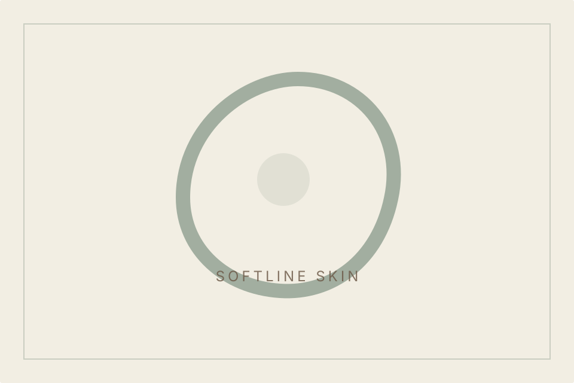
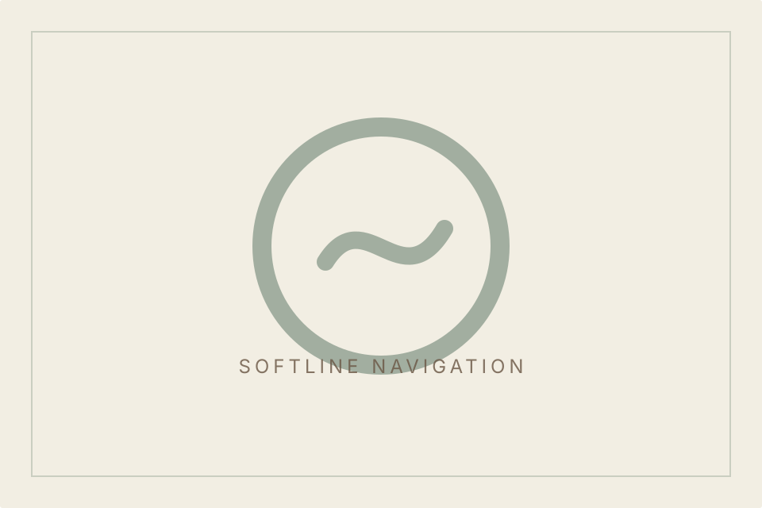
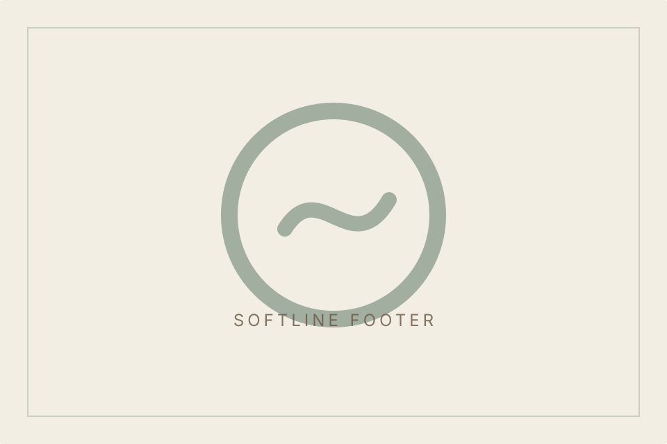

Texture
Refined guidance.
Softline / Skin Hero
A refined approach to understanding skin, routine, comfort, and realistic goals.
Softline / Assessment
Skin guidance works best when it begins with observation, questions, and individual context.

Softline / Planning Cards
Texture, luminosity, comfort, and routine can be discussed with care.
Refined guidance.
Useful route.

Respect limits.

Daily context.
Softline / Texture Break
Skin confidence should feel natural, realistic, and personal.
Softline / Natural Confidence
The goal is thoughtful guidance that respects your features and comfort.
Softline / Related Guidance
Continue with broader care planning or laser suitability.
Softline / Journal Preview
Read simple guidance before deciding what to ask next.
Softline / Consultation Path
A consultation helps connect your skin context with realistic next steps.
Softline / Skin Context
Routine, texture, sensitivity, and goals help shape better questions.
Daily context.
Refined guidance.
Comfort matters.
Personal direction.
Softline / Final CTA
Send your question or request an evaluation when you feel ready.